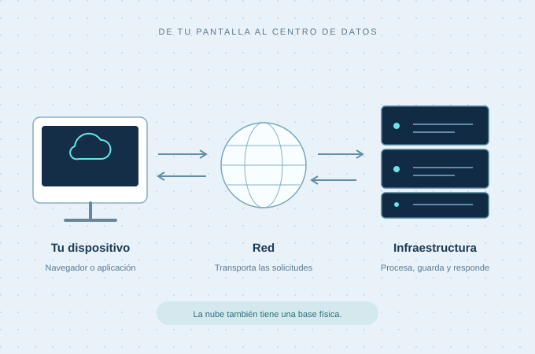

La infraestructura.
Recursos de cómputo, almacenamiento y red para construir tu propio entorno.
Comprender IaaSTecnología, sin complicaciones
Descubre qué hay detrás del Cloud Computing. Entiende sus fundamentos, compara sus servicios y explora cómo se aplica en el mundo real.
Un recorrido para aprender, conectar y comprender.

Tu ruta de exploración
Empieza por lo esencial o ve directamente al tema que te interesa. Cada parada responde una pregunta diferente.
¿Qué es la nube y qué sucede cuando utilizas un servicio?
Empezar por aquí 02 / COMPARAR¿Qué cambia entre infraestructura, plataforma y software?
Explorar los modelos 03 / DISTINGUIR¿Cómo se organizan y quién utiliza sus recursos?
Conocer los tipos 04 / CONECTAR¿Cómo se convierten estos conceptos en soluciones?
Ver casos de uso
Detrás de lo cotidiano
Cuando trabajas en una aplicación en línea, tu dispositivo se conecta con recursos que están en otros equipos. La nube permite acceder a ellos como servicios, según las necesidades de cada proyecto.
Para profundizar: Google Cloud: qué es la computación en la nube.
Tres formas de utilizarla
Los modelos de servicio ayudan a distinguir cuánto gestiona tu equipo y cuánto gestiona el proveedor.
Recursos de cómputo, almacenamiento y red para construir tu propio entorno.
Comprender IaaSUn entorno administrado para concentrarte en desarrollar y desplegar aplicaciones.
Comprender PaaSSoftware disponible como servicio para utilizar sus funciones y colaborar.
Comprender SaaSModelos de servicio: AWS: tipos de Cloud Computing.